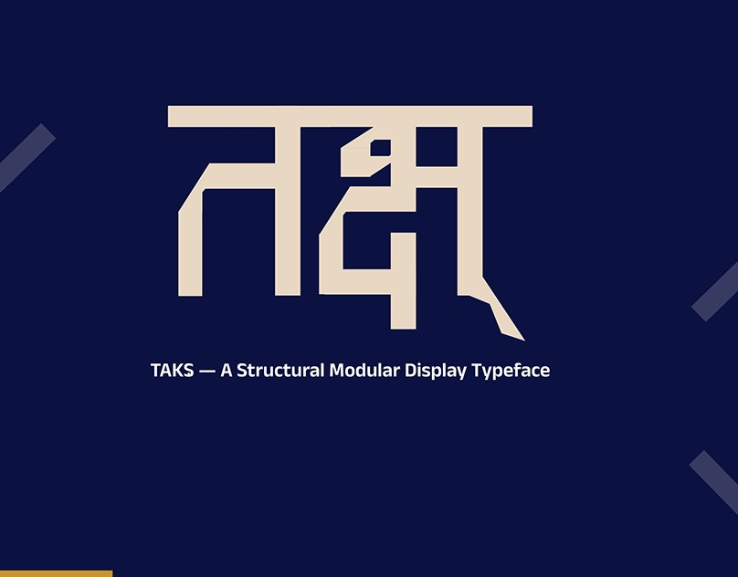
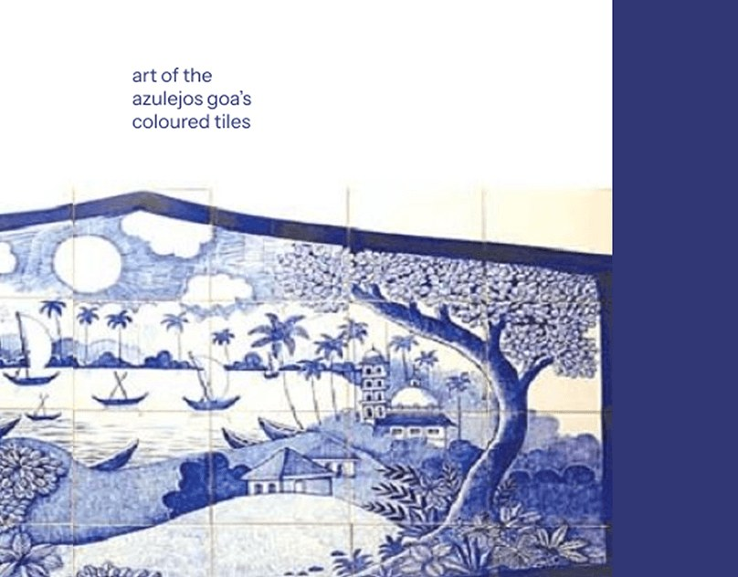
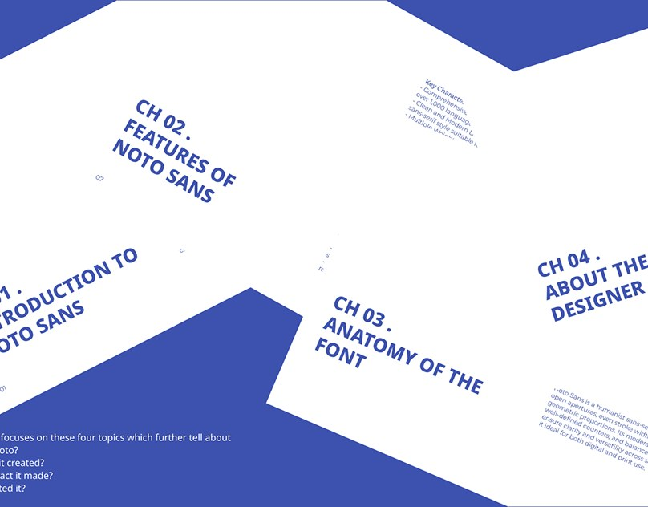
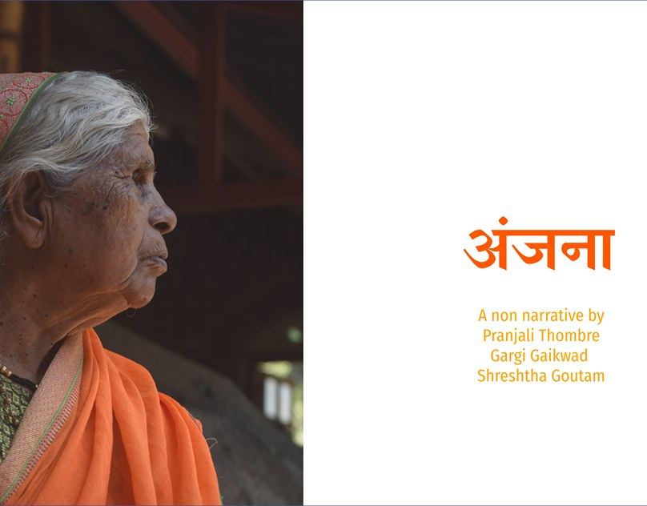
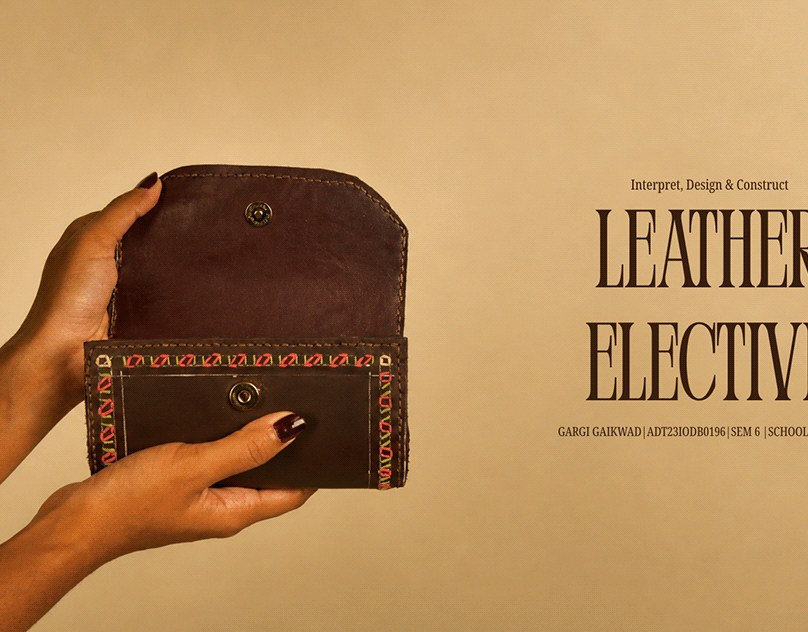
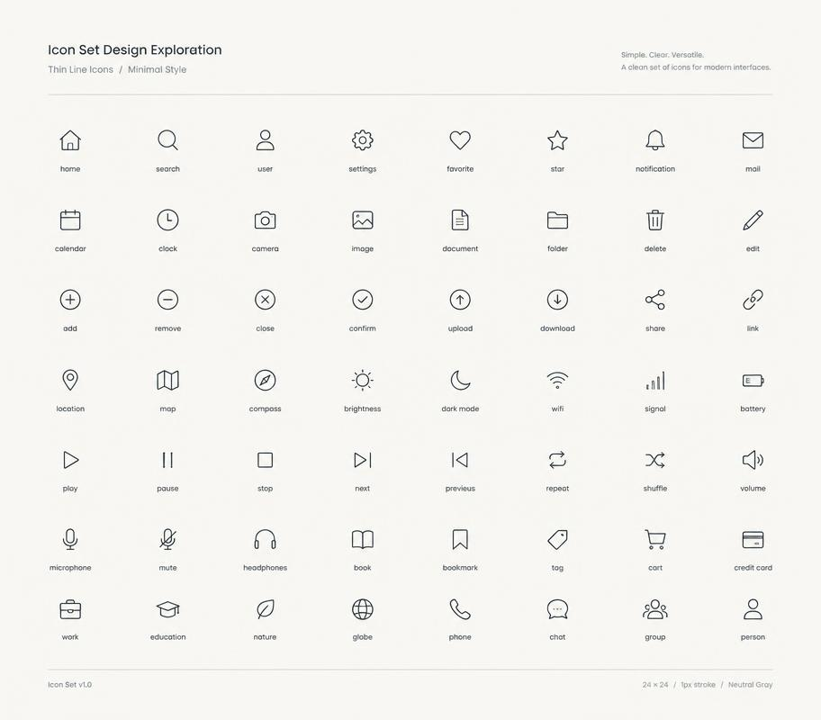
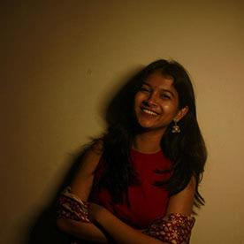

Hi, I’m Gargi.
I design type, stories & crafts.
Communication designer, based in Pune.


goa tiles





hi, it’s me
I’m a Communication Design student interested in type design, publication and researching crafts around India.
My work often begins with understanding the brief, researching, processing and crashing out, but with all of this I end up delivering well-researched work.
Right now
I lead international service avenue projects under the Rotaract Club of Khopoli (RID 3131), alongside being its creative head. I make the club’s quarterly newsletter and website.
Outside the studio
You’ll find me in a café enjoying coffee, roaming around the city to explore new stops (solo dates), or just taking a day off to reset.
Skills
Tools
Experience
- 2026 — nowInternational Service Director & Creative Head
Rotaract Club of Khopoli · RID 3131
Leading international service avenue projects and making the club’s quarterly newsletter and website. - 2026 — nowGraphic Design Intern
Directorate of Archaeology and Museums Maharashtra
Publication design for heritage: the Rajgad and Pratapgad fort publications and a Suf craft booklet. - 2025Summer Intern
Weekly Sadhana — साधना साप्ताहिक
Editorial and communication work for the Marathi weekly. - OngoingB.Des Communication Design
MIT Institute of Design, MIT ADT University, Pune
Studies in communication design, typography, publication and visual culture.
Let’s chat?
Where the work comes from
Tap a pin — each one is somewhere my work has been made or studied.
Western India
Goa’s tiles, the Sahyadri forts, a craft from Kutch, and the city I work from.
Photo gallery